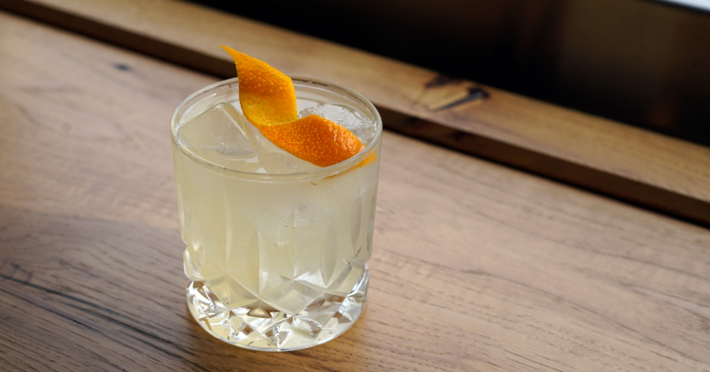

Can AI make a better drink? We asked an expert (and the answer might surprise you)

It's no secret that artificial intelligence (AI) is transforming various industries, from healthcare to finance. But can AI be used to make a better drink? We spoke to an expert in the field to find out.
The story
Meet Alex, a bartender with over 10 years of experience in the hospitality industry. He's seen it all, from the simple classics like a Manhattan to the more complicated creations like a smoked Old Fashioned. As someone who prides himself on his craft, Alex was hesitant when he first heard about using AI to make a better drink.
"I thought, 'No way can a computer program replace the human touch in making a cocktail'," Alex recalls. "But then I started to think about it more, and I realized that AI can actually enhance the bartender's skills."
With that in mind, Alex attended a seminar on the use of AI in the bar industry. He was surprised to learn just how much potential there was for AI to improve not only the efficiency of making drinks, but also the quality and consistency.
The examples
So, how exactly can AI be used to make a better drink? Here are a few examples that Alex shared with us:
- Recipe creation: AI can analyze thousands of drink recipes and ingredients to come up with new and innovative cocktails that may have never been thought of before. This can also help bartenders to use up ingredients that may otherwise go to waste.
- Inventory management: AI can track inventory levels and alert bartenders when they need to restock certain ingredients. This can reduce waste and ensure that popular drinks are always available.
- Drink customization: AI can learn a customer's preferences and recommend drinks based on their tastes. This can help bartenders to provide personalized service and create a more memorable experience for the customer.
- Consistency: AI can ensure that every drink is made the same way every time, reducing the chances of human error or inconsistency. This can help to build a strong brand identity and increase customer loyalty.
The conclusion
After learning more about the potential uses of AI in the bar industry, Alex emerged a believer in the technology. He now uses an AI-assisted system to create and serve drinks at his bar, and has noticed a significant improvement in both efficiency and quality.
"AI has allowed me to be more creative and efficient in my work as a bartender," he says. "It's not about replacing human bartenders, but rather enhancing our skills and letting us focus on the things that matter most – creating a great experience for our customers."
Tips
- When considering using AI in the bar industry, it's important to do your research and choose a system that is tailored to your specific needs.
- Be sure to involve your staff in the implementation process and provide training so that they feel comfortable with the new technology.
- Remember that AI is not a replacement for human bartenders, but rather a tool to enhance their skills and improve the customer experience.
References
Hashtags
- #AIBartender
- #AIinHospitality
- #AIinBeverageIndustry
- #SmartBartender
SEO Keywords
- AI bartender
- bartender industry
- artificial intelligence in hospitality
- smart bartender system
Article Category
- Food and Drink
- Artificial Intelligence
- Hospitality

Curated by Team Akash.Mittal.Blog
Share on Twitter Share on LinkedIn